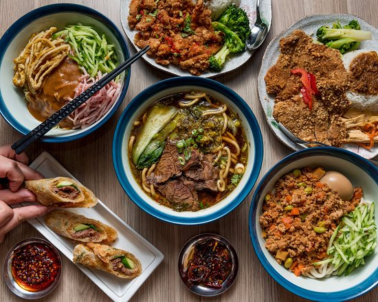

TOP 10 TAIWAN TRADITIONAL FOOD
Talking about food here is complicated. But enjoying Taiwanese food is quite the opposite. Sugary, aggressively herbal, and deeply umami flavors permeate the local cuisine in a visceral way, a sensation that only amplified in Taipei by its setting often a bustling street corner, a jam-packed night market, or a steamy hot pot palace. This is the essence of crowded, the hot and noisy spirit that makes the island breathe. Its the in-your-face flashing lights, powerful smells of stinky tofu, and jittery, larger-than-life feeling that comes with being elbow-to-elbow inside a large, pulsating mass in one of Asias densest urban centers. Our article will introduce famous snacks and restaurants. Some foreigners don't know where to get the most traditional Taiwanese foods, so we could introduce where to go and the taste of the foods there.
Bubble Milk Tea Theres no such thing as bubble milk tea is oth er coutries,bubble mike is first made in Taiwan,we will like forigenies to try 50 Arashi because it's taste good and cheap. Bubble drinks are usually cool, refreshing, and a sweet drink with tapioca pearls sitting on the bottom of a clear cup. Sometimes the drink is made with fresh fruits, milk, and crushed ice to create a healthy milk shake. You can also find drinks that are made of powdered flavoring, creamer, water, and crushed ice. And if you like it like the Asians do, the cool drink usually includes a healthy tea, infused by a flavoring.
There are lot of foregieners who think stinky tofu's disgusting, stinky tofu is a kind of fermented tofu, which has a highly unpleasant, pungent smell, especially when it is deep fried -think dirty wet socks or strong blue cheese. In Chinese its called chou dou fu. This dish is mostly eaten as a quick snack. Its a popular street food, typically cooked on the side of the road at small stalls, and its not commonly sold in restaurants. Stinky tofu is considered by many to be the national snack of his dish is mostly eaten as a quick snack. Its a popular street food, typically cooked on the side of the road at small stalls, and its not commonly sold in restaurants. Stinky tofu is considered by many to be the national snack of Taiwan
Shaved ice mountain is a kind of ice cream,but its ice that cuts into samll peices taht put in a boul.foveginenes may not eat thses in other countries,so we thinks its good to try one. Taiwan style shaved ice is available with a variety of toppings, but most prefer fresh mango when in season. Mangos in Taiwan are said to be among some of the best in the world. Chinese and Taiwanese shaved ice, known as bao-bing or tsua-bing, arrives in a deep saucer and is meant to be shared. The ice, piled high into a conical shape and topped with condensed milk, is ringed with gelatin squares, taro and red azuki beans. You can find it at the night markets next to the stinky tofu and oily pancakes. Locally, you can find it at Taipei Cafe.